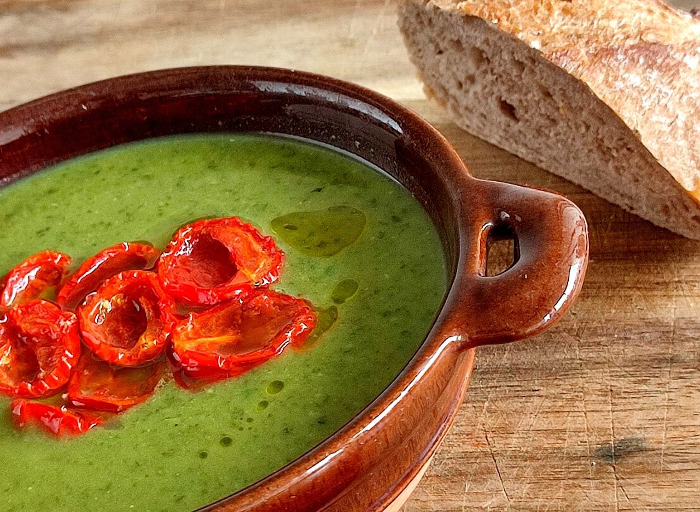

Másnapos Leves

Leírás
Ez a leves egy tizenhat egyetemistát számláló kollégiumi konyhában született meg néhány éve másnapos leves néven.
Csodalevesről van szó, mert egyrészt megfőzi magát, és szinte alig kell hozzá zöldségeket darabolni, tehát pofonegyszerű elkészíteni, másrészt pedig tele van olyan ásványi anyagokkal és vitaminokkal, amik feltöltenek energiával, amikor épp kicsit le vagy merülve.
(Azt hiszem, a szövegkörnyezetből mindenki kitalálta, hogy a fantázianév nem a leves másnaposságára utal.)
Emellett hozzá kell tenni, hogy bár hihetetlen, de igaz: ez a leves nem csak gyors és tápláló, hanem isteni finom is, tehát mindenképp érdemes legalább egyszer kipróbálni.
Hozzávalók
4 adaghoz
- 1 nagy fej hagyma (a kedvenc fajtád)
- 4-5 gerezd fokhagyma (ízlés szerint több vagy kevesebb is lehet)
- 50 dkg fagyasztott zöldborsó (kb. 3 és fél bögre)
- 20 dkg friss spenót vagy fodros kel
- 1 csokor friss petrezselyemzöld (menta vagy bazsalikom is nagyon illik hozzá)
- 20 dkg friss szilva-vagy koktélparadicsom (feldarabolva kb. egy bögre)
- 2 evőkanál olívaolaj
- só és frissen őrölt bors
Elkészítés
- A sütőt melegítsd elő 175 fokra, a paradicsomot pedig kockázd fel — ha koktélparadicsomot használsz, elég kettévágni. A legtöbb nedvességet távolítsd el a paradicsomokról, a zselés belsővel együtt. A paradicsombelsőt tedd félre, később majd beletesszük a levesbe. (Így finomabbra sül a sütőben a paradicsom, de ha nincs kedved bíbelődni vele, nyugodtan kihagyhatod ezt a lépést, mindenképp isteni lesz.)
- Egy evőkanál olívaolajban és egy jókora csipet sóban forgasd meg a paradicsomokat, majd egy sütőpapírral bélelt tepsin helyezd el őket úgy, hogy ne érjenek egymáshoz, és tedd be őket a sütőbe.
- A hagymát kockázd fel (nem szükséges túl apróra), és egy lábasban egy evőkanál olívaolajon, közepesen alacsony lángon kezdd el pirítani. 3-4 perc pirítás után egy nagy csipet sót adj hozzá.
- A fokhagymagerezdeket vágd néhány, mindössze 4-5 darabra, majd ha a hagyma már legalább 6-7 perce pirul, a fokhagyma felét add hozzá.
- A fokhagyma után 2-3 perccel tedd a lábasba a zöldborsót, vedd a lángot közepesen magasra, és pár percig pirítsd.
- Önts a borsóra kb. 7 dl vizet, és vedd a lángot magasra. Ha felforrt, add hozzá az alaposan átmosott spenótot/fodros kelt, sót, a paradicsombelsőt, és vedd a lángot alacsonyra. A lényeg, hogy a leves épp csak bugyogjon: ha ez nem történik meg, akkor vedd a lángot picit magasabbra, de fontos, hogy ne forrjon túlságosan.
- Fedő alatt hagyd a levest főni 10 percig, majd add hozzá a többi fokhagymát.
- További 10 perc után add hozzá a petrezselymet is, majd 2-3 perc után húzd le a tűzről, és botmixerrel alaposan krémesítsd el. (Ha fodros kelt használsz, legyél türelmes, több idő kell neki a krémességhez, mint a spenótnak.) Tedd vissza a tűzhelyre, és közepes lángon, folyamatosan kevergetve még 2-3 percig főzd. Mielőtt elzárod, kóstold, és ha kell, tegyél még hozzá sót.
- A paradicsom pont tökéletesre sült, amíg a leves megfőtt: tálaláskor feltétként tegyél belőle a leves tetejére.